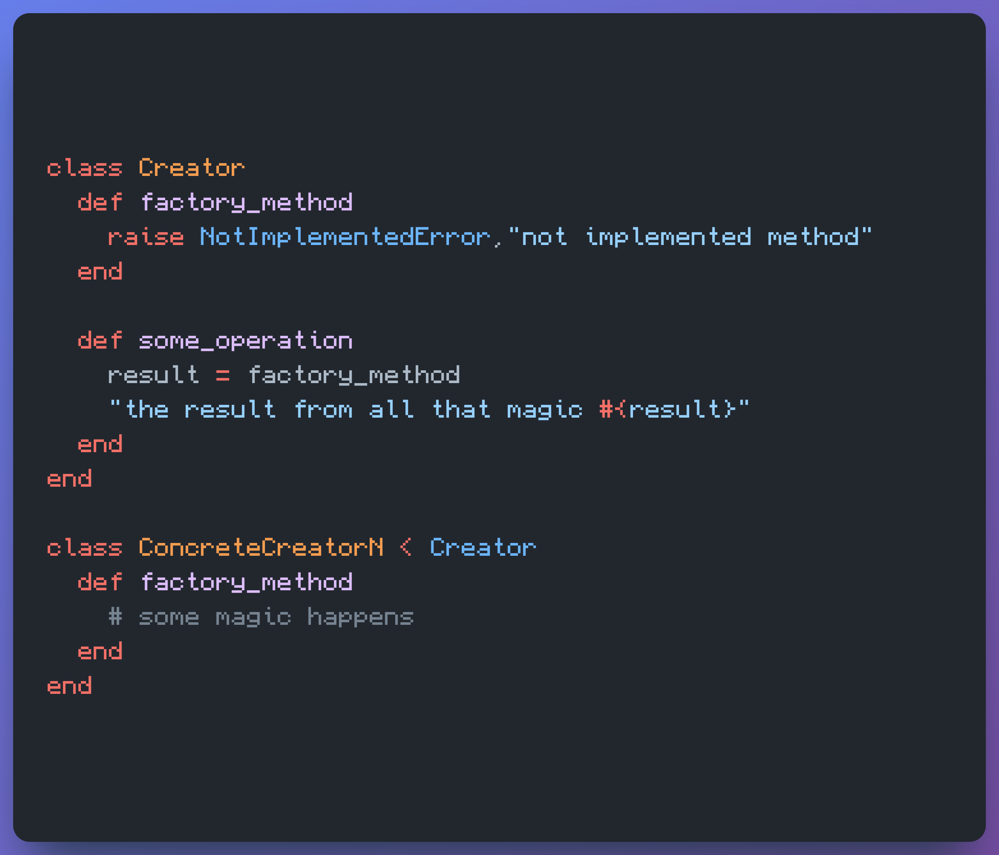
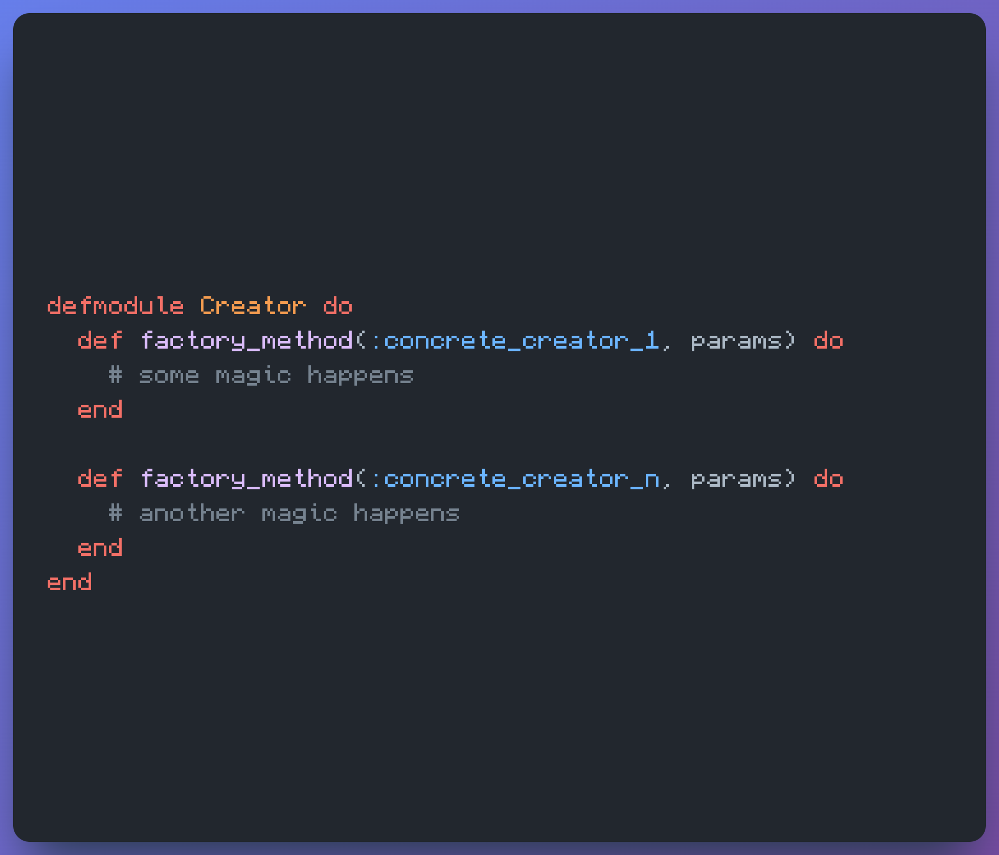

Design Patterns, P1 ~ 2024.08.23 @ 19.50
How many design patters are? Well, if you read the title of such blog, you probably guess: I have no idea but let's find out.
A very passive research, I know very unfair, it says that the book Design Patterns: Elements of Reusable Object-Oriented Software was so influential that apparently those are the design patterns.
The book focuses on, well, OOP. It says nothing about functional programming. I wonder how that happened, I mean, not why functional programming was not included in the book but rather why OOP won the battle (bit dramatic here). Ignoring any hardware limitations, there were, I really don't understand why OOP got more popular. I mean, I can guess, functional programming is too math-y, right?
The point I'm trying to make is that we as human tend to not to take the high road. Maybe is the path of least effort? I mean in a way it is but to what cost?
Anywho! I dislike design patterns. In my head, that complexity makes no sense but I didn't know why. I studied them. I memorized them. I have to since I'm not a software engineer and I have to compete with actual software engineers. I have always disliked them. I code them since the jobs required that but honest to God, bleh.
Let's try to code them in Elixir, my favorite programming language. Let's start with Factory method in Ruby.
The Creator class provides the template method to be used by each class that inherited from it. You can have N different ConcreteCreator that do their own magic and so it is the factory method.
And now, in Elixir
Of course this is a very simple approach. In the OOP version, each ConcreteCreator can grow as needed and so in functional approach. But I do believe that functional programming is just a matter of functions and composition of them and in the OOP, depending on the language, it gets messier and messier. At least for me, it's more easy to think and look for functions than hidden functions and such.
Other devs say that the design patterns appears naturally but I disagree. I think they do appear but the underline mechanism is the reason for it. Others say function programming has their own complexity to grow and yes that is correct but the composition for it may need some effort in the beginning but once the mental model is acquired, everything becomes smoothly.
but what the hell do I know? I dunno what I'm doing.